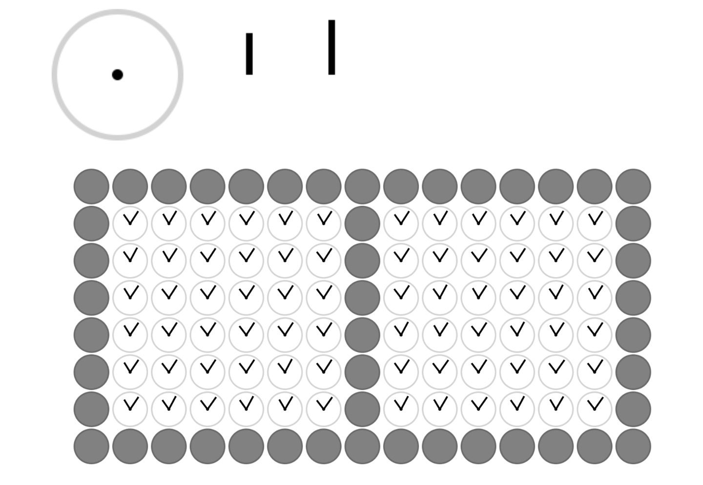
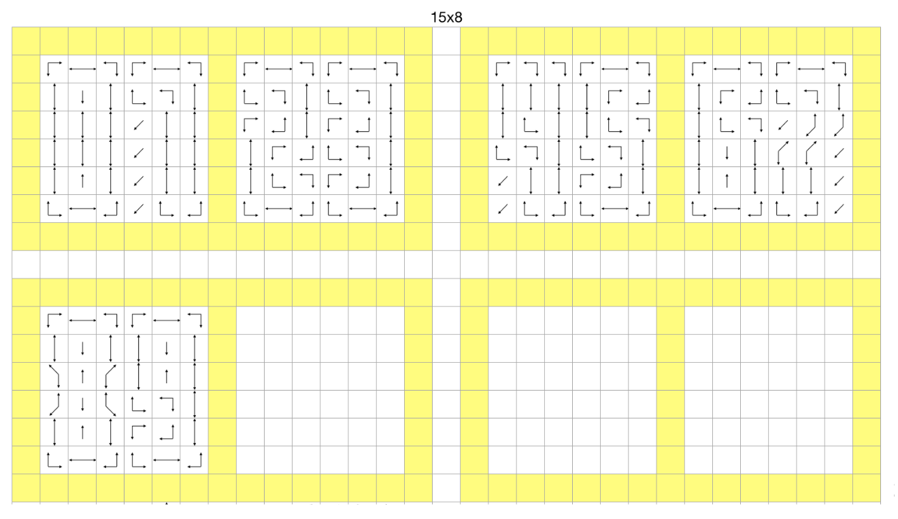
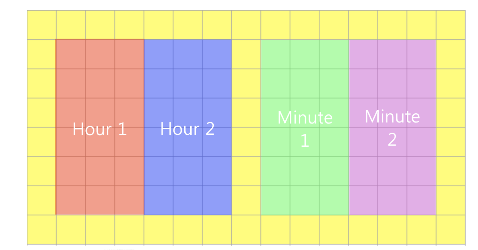
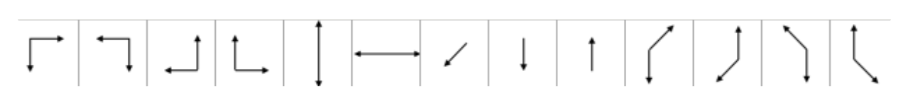
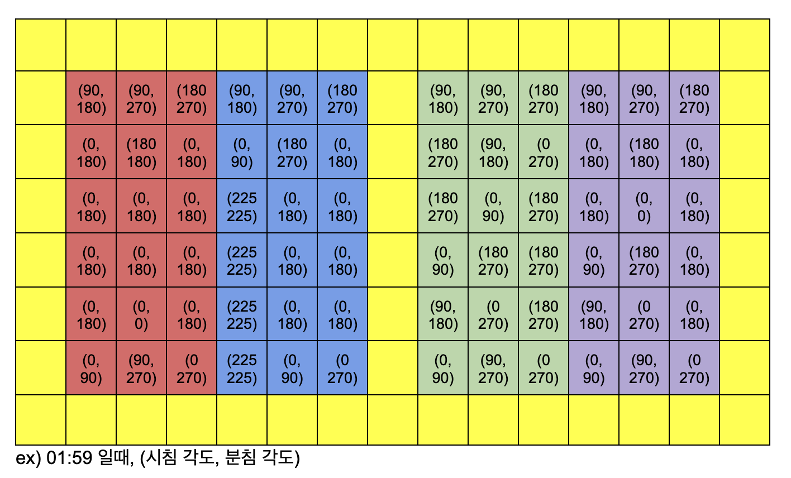

이 프로젝트는 'Humans 1982' 이라는 창작가들이 만든 'A Million Times 120'이라는 작품에 영감을 받아 진행한 프로젝트이다. 'A Million Times 120'의 실제 모습은 바로 아래에 첨부된 영상을 통해 직접 확인해볼 수 있는데, 쉽게 설명하면 현재 시간을 여러 개의 시계들의 시침과 분침을 통해 문양으로 표현하고, 시계들의 시침과 분침을 특정한 형태와 속도로 움직여 하나의 거대한 파도와 같은 아름다운 형태를 표현하는 것이다. 'Kinetic Wall Clock'은 해당 작품에 영감을 받아, 이를 실제로 Unity를 이용해 구현해본 것으로, 고등학교 2학년 때 동아리의 개인 프로젝트로 발표 및 보고서를 제출한 프로젝트이다.
다음은 고등학교 2학년 때, 실제로 동아리 프로젝트를 위해 직접 작성한 보고서의 내용이다.
1. 서론: 개발 배경 및 목적
1) 개발 배경
최초의 기계식 시계가 언제 등장했는지 아는가? 최초의 기계식 시계는 13세기 유럽에서 등장했다고 한다. 당시 기술로는 시계를 만들기 매우 어려웠기 때문에 가격이 매우 비쌌으며 오차가 많았다. 시계가 보편화된 지금 시계의 디자인을 과거와 비교해보면 달라진 것이 거의 없음을 알 수 있다. 폴더폰이 스마트폰으로 바뀌고, 전구가 LED로 바뀌고, 편지가 메일로 바뀌었음에도 시계의 디자인은 크게 바뀌지 않았다. 물론 스마트워치나 디지털 시계들이 등장하긴 했지만, 시침과 분침을 통해 시간을 표시하는 시계의 근본적인 디자인은 변하지 않았음을 알 수 있다.
평소처럼 유튜브를 보던 어느 날, 시침과 분침을 이용해 디지털 시계처럼 시간을 알려주는 시계 (The ClockClock) 에 대한 영상을 보게 되었다. 시침과 분침을 전통적인 방식으로 사용하는 것이 아닌 매우 창의적인 방식으로 사용한다는 점에서 해당 시계를 하나 갖고 싶어 검색해본 결과, 가격이 무려 $6,000에서 비싸게는 $10,000까지 나간다는 것을 알게 되었다. 이에 ‘저 시계를 사는 것이 현실적으로 불가능하다면 코딩을 통해 내가 직접 만들면 어떨까?’ 라는 생각이 문득 들어 유니티 (Unity)를 통해 직접 개발해보게 되었다.
그동안 유니티를 사용해 게임만을 만들어왔기 때문에 이번 기회를 통해 유니티가 단순히 게임’만’ 만들 수 있는 엔진이 아닌, 게임'도' 만들 수 있는 물리 엔진임을 다른 사람들에게 증명하고 내 자신이 게임을 제외한 다른 방면에서도 개발을 할 수 있음을 이 프로젝트를 통해 증명하고자 했다. 뿐만 아니라 이번 기회를 통해 1인 개발이 얼마나 힘든 일인지에 대해 느껴보고 개발부터 출시까지 어떠한 구체적인 과정들이 필요한지에 대해 알아보고자 한다.
2) 개발 목적
시침과 분침을 이용해 현재 시간을 디지털 시계의 형식으로 표현할 수 있는 ‘Kinetic Wall Clock’을 유니티를 사용해 만들어보자.
2. 이론적 배경 및 선행 연구
1) Kinetic Wall Clock 이란?
inetic Wall Clock (The ClockClock) 은 2009년 Per Emanuelsson 과 Bastian Bischoff 이 ‘Humans Since 1982’ 라는 이름 아래 만든 시계로, “시간을 어떻게 시각화할 수 있을까?” 라는 의문에서 시작되었다. 현재 그들이 만든 시계들은 ‘clockclock.com’ 이라는 웹사이트에서 $6,000 ~ $10,700 사이에 판매되고 있다.
3. 개발 방법 및 절차
1. Photoshop을 통해 시계의 배경과 시/분침을 만들고, 1920x1080의 화면에 시계를 15x8의 형식으로 나열해 준다.

Figure 1
※시계의 가장 외각 부분과 가운데 열은 뚜렷한 시간 구분을 위해 비워두고 회색처리한다.
2. 0부터 9까지의 숫자를 시침과 분침을 통해 어떻게 표현할지 결정한다.

Figure 2
3. 시계의 작동 과정 / 순서를 정한다.
0초 ~ 15초: 회전 시작 (무작위)
15초 ~ 25초: 현재 시간 보여주기
25초 ~ 30초: 재정비 (제자리로 돌아오기)
30초 ~ 60초: 군무 (3가지 군무 중 무작위로 한 개를 결정)
※시작을 누른 1분 뒤 0초부터 회전을 시작한다.
4. 시계를 구현한다.
※각각의 시계의 움직임과 시간을 관리하는 것을 따로 구분해 개발한다. 숫자 표현에 사용되지 않는 시계의 시침과 분침은 왼쪽 아래 대각선을 바라보고 있는다. 시침과 분침의 속도는 실제 시침과 분침의 속도와 같지 않다.
Time_Tracker.cs 를 통해 실제 시간 (Hour), 분 (Minute), 초 (Second)를 Static 변수 Real_Hour, Real_Minute, Real_Second 에 넣어준다 (실시간으로 현실의 시간을 확인한다).
Pregame_Manager.cs 를 통해 60 - Time_Tracker.Real_Second 가 0이 될 때까지 딜레이를 준다 (정확히 0초에 시계가 돌아가도록).
시계의 고정 위치, 딜레이 시간, 시계의 모양을 관리할 배열들을 각각 만든다.
정수형 2차원 배열 Clock_Number: 0부터 9까지의 숫자를 표현하기 위해 4개로 나누어진 구역의 시계들이 가져야할 각도를 저장 (숫자, 각도)

Figure 3
실수형 2차원 배열 Clock_Position: 하나의 시계가 아래 그림에 해당되는 모양을 만들기 위해 가져야할 시침과 분침의 각도를 저장 {(x, 1): 시침, (x, 2): 분침}.

Figure 4
실수형 3차원 배열 Clock_Delay: 3가지 군무가 실행될 때 각각의 시계가 가질 딜레이 시간을 저장하고 있다.
5. 3번에서 정한 시계의 움직임 과정을 더욱 세분화해 GameMode라는 변수에 저장해 해당 시간이 지나면 GameMode가 바뀌어 시계들이 지정된 움직임을 수행할 수 있도록 한다.
GameMode 1: 0초 ~ 15초 (시계 회전)
GameMode 2: 15초 ~ 25초 (시간 출력)
GameMode 3: 25초 ~ 30초 (시계 회전)
GameMode 4: 30초 ~ 35초 (시계 재정비)
GameMode 5: 35초 ~ 55초 (군무 출력)
GameMode 6: 55초 ~ 60초 (군무 모양 유지)
6. 시침과 분침이 어떤 위치에서 회전을 시작하더라도 모든 시계의 시침과 분침은 정확한 시간에 동시에 주어진 위치에 정지해 시간을 출력해야 함으로 회전 속도를 구하는 관계식을 만들어 준다.
7. 분 (Minute) 이 바뀌게 되면, 시계의 4구역에 각각 어떤 숫자를 출력해야 하는지 ClockManager.cs에서 파악한다. 계산한 시간을 Clock_Number 배열에 기반해 각각의 모든 시계에 정지해야 하는 각도를 부여하게 된다. 시계들은 회전을 하다 정지해야 하는 시간이 되면 해당 위치에 정지해 시간을 출력하게 된다.

Figure 5
사용된 코드들 (모든 코드를 사진으로 담기에는 한계가 있기 때문에 각 스크립트 별로 대표하는 하나의 사진만을 첨부한다)
이번 프로젝트를 통해 게임이 아닌 실생활에서 실용적으로 이용할 수 있는 프로그램을 제작할 수 있었다. 단순히 제작에서 프로젝트를 마치는 것이 아니라, 시계의 작동 영상을 직접 촬영 및 편집해 Youtube에 올렸고, 시계가 Window를 기반으로 작동하도록 만들었기 때문에 Google PlayStore에 올릴 수 없어 Itch.io라는 인디 게임 / 프로젝트들을 업로드하는 사이트에 실행 파일을 올려 세계인들과 만든 프로젝트를 공유하게 되었다. 이를 통해 혼자 모든 것을 감당해야 하는 1인 개발자들이 얼마나 힘든 일을 해내고 있는 것인지에 대해 뼈저리게 알 수 있었으며, 개발부터 출시까지 모든 과정을 내 손으로 직접해내었기 때문에 하나의 프로젝트를 완성함에 있어 어떤 과정들이 필요한지에 대해 더 자세히 배울 수 있었다. 이에 왜 대기업들 혹은 중소 기업들이 하나의 프로젝트에 분야를 세분화해 적게는 몇 명에서 많게는 수백명이라는 엄청난 인원을 배치하는지에 대해 알 수 있었다.
2) 개발 한계점
시계가 회전하다가 해당 초가 지나면 현재 시간을 표시할 수 있도록 정지하는 것을 구현하는 것은 어렵지 않았지만, 모든 시계의 분침과 초침이 정확한 시간에 정확한 위치에 동시에 정지하도록 하도록 관계식을 만드는데 어려움을 겪었다. 개발 초기 시계 방향으로 각도를 설정했던 것과는 달리 Unity상의 각도는 반시계 방향으로 움직인다는 것을 고려하지 못했기 때문에 관계식을 만드는데 어려움을 겪었다.
시계가 정상적으로 회전하고 시간을 보여주기 위해서는 매분마다 정확히 0초에 루프를 시작해야 한다. 하지만 처음 프로그램을 시작할 때 0초에 정확히 맞추어 시작하는 것은 불가능에 가깝기 때문에 이 문제를 해결하기 위해 다음 0초 때까지 딜레이를 주는 것이 중요하다. 이를 개발 막판에 깨달았기 때문에 현재 시간과 시침 분침의 시간 표시를 일치시키는데 애를 먹었다. 만약 이것은 개발 초기부터 고려했었다면 보다 수월하게 개발할 수 있었겠지만 너무 늦게 발견해 개발에 어려움을 겪었다.
첨언
고등학교 2학년 때 만든 프로젝트이며 작성한 보고서이기 때문에 지금 보았을 때는 물론 부족한 점이 존재한다. 그럼에도 그 당시의 실력과 주어진 시간을 생각했을 때, 정말 최선을 다해 완성한 프로젝트라는 것을 간접적으로 느낄 수 있었으며 결과물도 꽤나 만족스러울 정도이다. 다만, 처음 'Kinetic Wall Clock'이라는 시계를 본 사람들이 대부분일 것이기 때문에 어떤 시계인지를 구체적으로 설명하면 좋을 것 같고, 결과물을 설명할 때 역시, 단순히 영상이 있으니 참고해달라고 하는 것이 아니라, 자세하게 일일히 설명해주는 편이 더 좋았을 것 같다는 생각이 든다.
그 당시에는 윈도우 실행 파일로 만들어 itch.io에 게임 파일/프로젝트 파일을 업로드했기 때문에 이를 직접 확인해보려면, '윈도우' 환경에서 파일을 다운받고 직접 실행해야했기 때문에다 많은 사람들로 하여금 접근하기 쉽지 않았다. 이에 이번에 본 글을 작성하면서, 앞서 'Flappy Bird'와 'Molly Molly'를 itch.io에 WebGL 형식으로 업로드한 방식을 차용해 해당 프로젝트도 WebGL의 형식으로 플레이해볼 수 있도록 수정했다.
과거에 직접 작성한 보고서를 보며, 그 당시의 열정과 치열하게 살았던 열기를 글을 통해 느낄 수 있었다. 내가 만든 프로젝트에 얼마나 자신이 있는지, 얼마나 남들이 알아주었으면 좋겠는지 등을 단지 글을 읽는 것만으로도 확인할 수 있는 보고서였다. 이에 본 글을 쓰며 대학생이 되면서 정말 실력있는 다양한 사람들을 만나 자신감을 잃어버리고, 어떤 길을 가는 것이 맞는지 조금은 방황하고 있는 지금, 초심을 떠올리며 더 열심히 해야겠다는 동기부여를 받을 수 있었다. 여러 참신한 아이디어들을 떠올리고, 이를 바로 실천에 옮겼던 그 당시의 태도와 마음가짐을 되찾아야겠다고 다짐하게 되는 하루다.